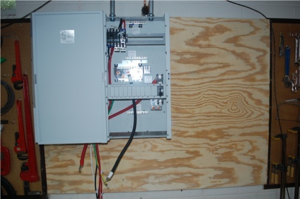
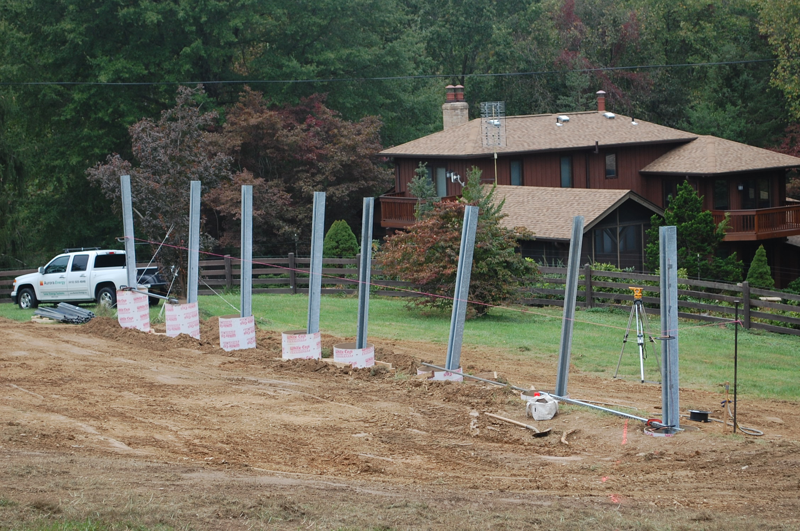

|
Home About VSI What We Do Who We Are Contact Info Resources Blog Data Archives Export |
Photo-voltaic Power Generation SystemInstallationPreliminary PreparationThe PV installer, Aurora Energy, has made two site visits, one with the excavation and concrete subcontractor, to assess the site in preparation for installation beginning in early September. The rough locations of the eight concrete piers to support the ground mount system have been placed:
The stakes don't show up very clearly in this photo; the eastmost and westmost stakes are shown with white arrows. The ground mount structure will extend 66 feet in the east-west direction, and about 16 feet north-south. The piers will be 24" in diameter and must extend at least 6'-6" (80 inches) below grade. Since the site slopes almost 4 feet along the 66' extent of the ground mount structure the piers will have varying heights above grade, from about 6 inches at the east end to roughly 4 feet at the west end. Some expensive panels and inverters may be residing at the site unattached for a brief period, and will exposed to determined thieves permanently, so a motion sensing surveillance camera was installed to monitor the site:
Alas, the oak tree obscuring the upper right portion of that view will need to be cut down as it will shade the panels. A search of the and Frederick County permits shows that the electrical and building permits have been obtained.
Note there will be a total of five conductor runs to those existing three boxes: one interactive inverter and the load side of the Xantrex (Schneider Electric) hybrid inverter to the critical loads panel (leftmost box), the other interactive inverter and the line side of the Xantrex hybrid inverter to the service entrance (middle box), and a line from the generator to the Xantrex hybrid inverter (rightmost box). The transfer switch will lose its original function of switching between grid and generator power, instead it will be used to switch between the current generator and a second diesel generator we may eventually acquire. The Aurora crew also mounted the Xantrex XW hybrid inverter on a piece of 3/4" plywood fastened to the basement wall: 
Note the Xantrex power distribution panel has a clever design to allow bypassing the inverter entirely using three double pole circuit breakers. The breaker on the left protects the line (grid) side. The breaker on the right protects the load side. The breaker in the middle parallels the line side breaker on the topmost side and the load side breaker on the load side. A mechanical interlock mechanism prevents both the center and right hand breakers from being closed at the same time. In normal use the center breaker will be open and the right hand (load side) breaker closed. To bypass the inverter the right hand breaker is opened and the center breaker is closed. These three factory supplied breakers are 60A. We will have to backfeed the service entrance (line side) with a 50A breaker because of the 120% rule (NEC article 705.12(D)(2)) that limits the sum of all backfeed and main breakers to 120% of the bussbar rating. The bussbar is 200A and the main breaker is 150A, leaving 90A total for the interactive inverter backfeed (40A) and the hybrid inverter backfeed (50A).
Some shots of the work in progress: 
The Aurora crew after a hard days work installing the support piers. The C&C Fencing crew at the end of the same day. |
|
|